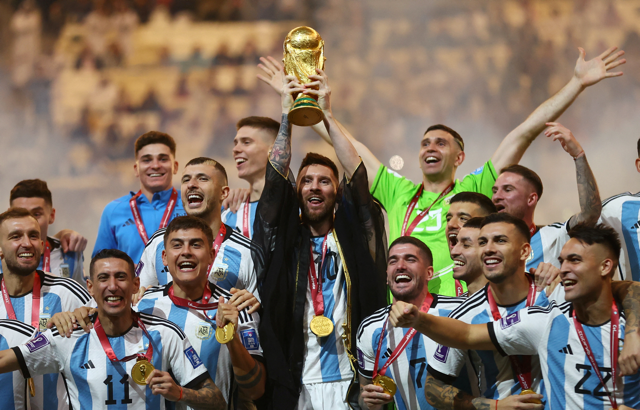

Love for the Beautiful Game
Football isn't just a sport—it's a way of life for me. I'm a passionate supporter of the Argentine national team and an avid admirer of Lionel Messi. The energy of the crowd, the artistry on the pitch and the shared joy of victory are experiences that never get old.
Watching Argentina play brings out emotions unlike anything else. From the dribbling skills to the strategic plays, the game is a constant reminder of how teamwork and talent come together to create magic. Messi's excellence and humility on and off the field make him a true role model.